GNS3
GNS3 es un simulador y emulador de redes que permite diseñar, configurar y probar topologías virtuales o físicas desde una computadora, trabajando con imágenes reales de routers y análisis de paquetes.
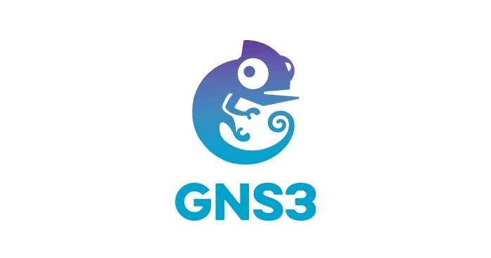
1. Instalación del programa
Primero ingresamos al navegador y descargamos el instalador desde la página oficial presionando Free download.
Enlace oficial: Descargar GNS3 aquí
2. Creación de topología y direccionamiento
- Arrastramos dos routers modelo c3725 al área de trabajo.
- Renombramos el primer router como Router-HQ y el segundo como Router-BR.
- Conectamos 2 switches junto a 2 máquinas virtuales (PC1 y PC2) mediante cableado Ethernet.
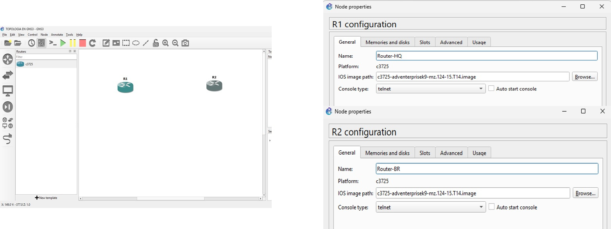
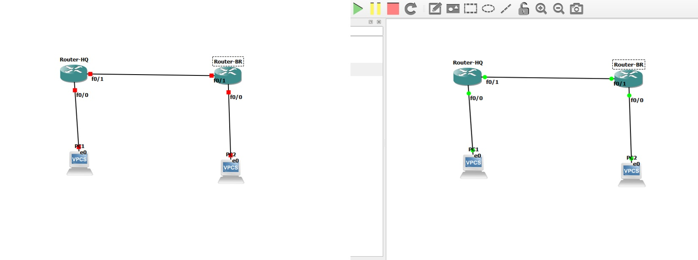
Configuración de interfaces en Router-HQ
Hacemos doble clic sobre el router para abrir la consola de comandos e ingresamos:
enable configure terminal hostname Router-HQ interface FastEthernet 0/0 ip address 192.168.1.1 255.255.255.0 no shutdown exit interface FastEthernet 1/0 ip address 10.1.12.1 255.255.255.252 no shutdown
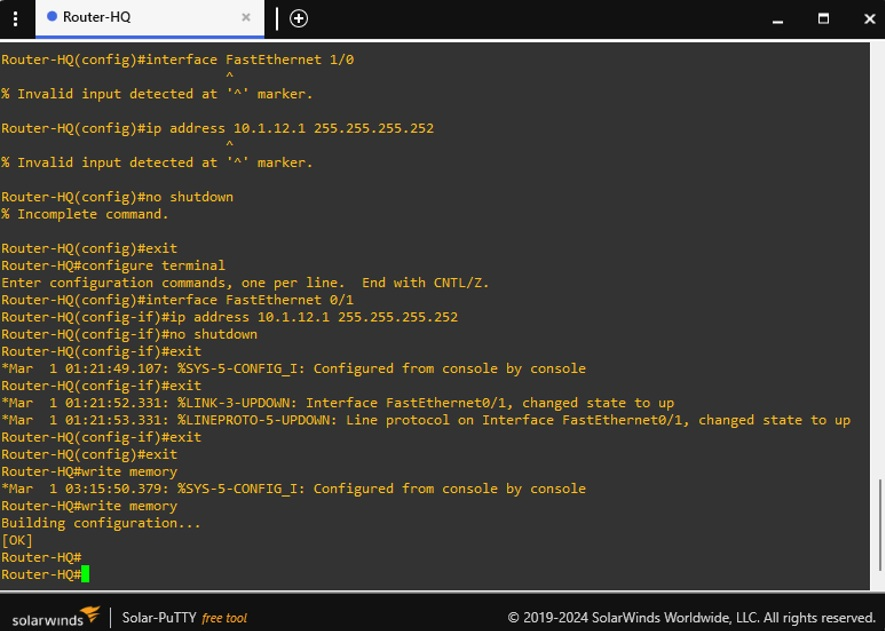
Asignación de IP en las PC virtuales
PC1: ip 192.168.3.2 255.255.255.0 192.168.3.1 PC2: ip 192.168.2.2 255.255.255.0 192.168.2.1
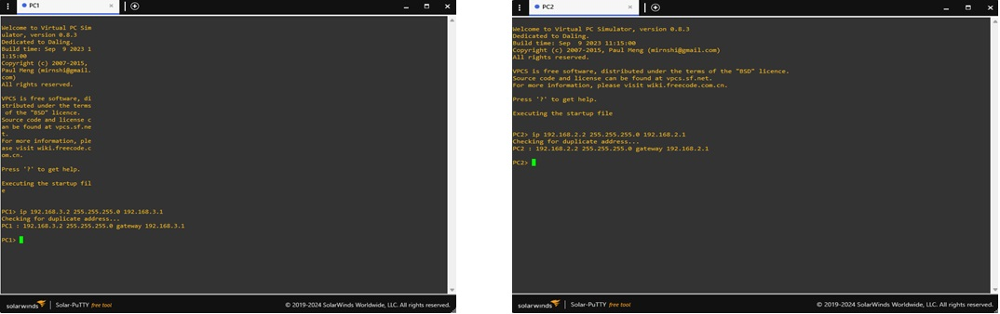
Verificación inicial con ping
ping 192.168.3.2
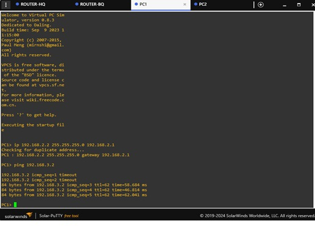
3. Configuración de enrutamiento OSPF
En la consola de Router-HQ activamos el protocolo OSPF y declaramos las redes conectadas:
conf t router ospf 1 router-id 1.1.1.1 network 192.168.2.0 0.0.0.255 area 0 network 10.1.12.0 0.0.0.3 area 0 end write memory
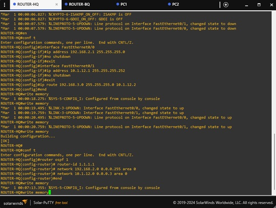
Comprobamos la conectividad bidireccional entre redes usando origen específico:
ping 192.168.2.1 source 192.168.3.1
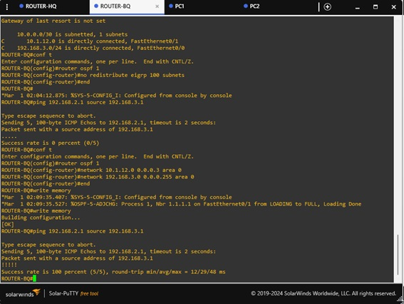
4. Análisis de tráfico con Wireshark
Hacemos clic derecho sobre el enlace entre Router-HQ y Router-BR, iniciamos la captura y presionamos OK.
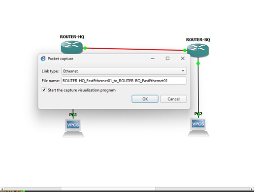
Filtramos por ICMP en Wireshark para aislar los paquetes de prueba:
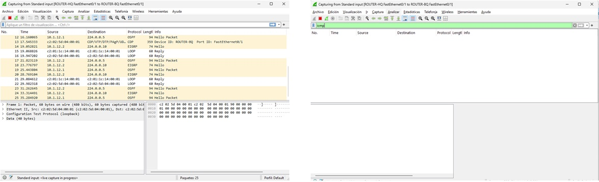
Desde PC1 ejecutamos ping 192.168.3.2 para verificar el tráfico de extremo a extremo:
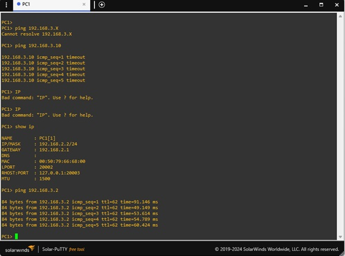
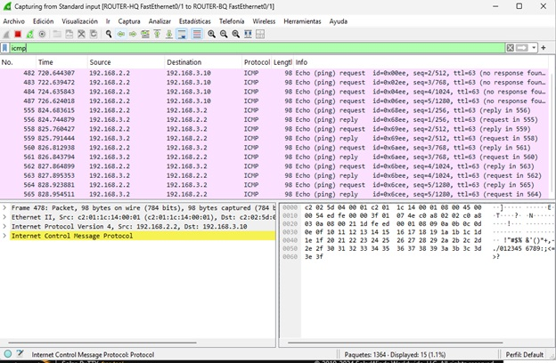
Finalmente filtramos por OSPF para confirmar que los routers mantienen vecindad activa e intercambian rutas:
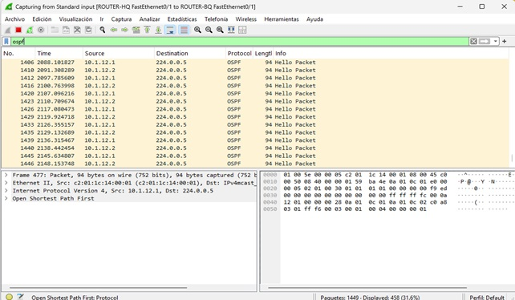
5. Biblioteca y recursos
- Repositorio oficial de GNS3 en GitHub — Código fuente de
gns3-guiygns3-server. - Documentación oficial de GNS3 — Guías de GNS3 VM, plantillas y capturas.
- Curso GNS3 Episodio 3 (Escuela de Redes) — Emulación de equipos en red.
- GNS3 VM paso a paso (Escuela de Redes) — Montaje de laboratorio virtual.